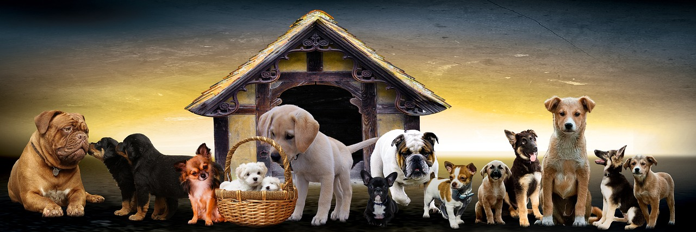

aqui o bem estar e felicidade do seu pitico é prioridade

A Pitico Pet é uma das maiores e mais renomadas pet shops especializadas em produtos para animais de estimação em todo o Brasil. Fundada em 1990, a empresa tem crescido constantemente, conquistando uma clientela fiel e ampliando sua presença para além das fronteiras nacionais, com uma abrangência que alcança atualmente diversos países da América Latina.
A história da Pitico Pet teve início há mais de três décadas, quando a família Nascimento, apaixonada por animais, decidiu transformar sua paixão em negócio. Com determinação e visão empreendedora, o fundador, Nelson Nascimento, liderou a expansão da empresa desde os primeiros dias. O nome "Pitico" é uma homenagem ao primeiro mascote da família, um pequeno cãozinho de estimação que inspirou a jornada empreendedora.
O crescimento da Pitico Pet foi notável desde sua fundação. Em apenas dois anos, já atendíamos clientes em 10 estados brasileiros. Em uma década, expandimos nossas operações para outros países da América do Sul, consolidando nossa presença internacional. Hoje, a Pitico Pet tem o privilégio de servir milhões de clientes em mais de 15 países, oferecendo uma variedade de produtos que vai desde rações especiais até acessórios de luxo para animais de estimação.
O número de colaboradores cresceu junto com nossa expansão. Atualmente, somos uma das maiores empregadoras do setor pet no Brasil, contando com uma equipe dedicada de mais de 5 mil profissionais. Além disso, mantemos parcerias com milhares de fornecedores locais e internacionais, contribuindo para a economia e desenvolvimento da indústria pet em nosso país.
A Pitico Pet tem sido reconhecida não apenas pelo seu sucesso comercial, mas também pelo compromisso com causas sociais e ambientais. Recebemos prêmios de reconhecimento por nossas iniciativas sustentáveis e investimentos em programas de bem-estar animal. Nossa loja já recebeu visitas de personalidades influentes, incluindo membros do governo e celebridades que compartilham nossa paixão pelo universo pet.